Plasmons#
In this tutorial we reproduce the paper by BG Mendis that first introduced the Monte Carlo method for simulating plasmons[Men19]. See the paper for a detailed description of the method, and see our citation guide, if you use this method in your research.
The method is demonstrated in two different modes:
Energy-filtered CBED: Experimentally equivalent to setting an energy-filter to a specific plasmon peak while collecting a CBED pattern.
STEM with plasmon loss: Experimentally equivalent to non-filtered STEM, where the scattering of an appropriately high number of excitations are averaged.
Energy-filtered CBED#
We start by doing the energy-filtered CBED calculation. We create a sample of silicon in the \(\{110\}\) direction, we repeat it in \(z\) up to the desired thickness of \(1600 \ \mathrm{Å}\), and a few times in \(xy\) to accomodate the probe size and to simulate a thermal ensemble.
We create a typical potential with frozen phonons with a RMS displacement of the silicon atoms of \(0.078 \ \mathrm{Å}\).
atoms = ase.build.bulk("Si", cubic=True)
atoms = ase.build.surface(atoms, indices=(0, 1, 1), layers=3, periodic=True)
atoms = abtem.orthogonalize_cell(atoms)
atoms *= (10, 7, 139)
atoms.center()
frozen_phonons = abtem.FrozenPhonons(atoms, sigmas=0.078, num_configs=50)
potential = abtem.Potential(frozen_phonons, slice_thickness=1.9)
fig, (ax1, ax2) = plt.subplots(1, 2, figsize=(12, 4))
abtem.show_atoms(atoms, plane="xy", scale=0.5, ax=ax1)
abtem.show_atoms(atoms, plane="xz", scale=0.5, ax=ax2, linewidth=0.0);
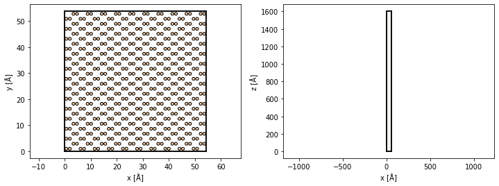
We create a probe with an energy of \(200 \ \mathrm{keV}\), a convergence semiangle of \(3.9 \ \mathrm{mrad}\), a spherical aberration of \(1 \ \mathrm{mm}\) and defocus of \(-600 \ \mathrm{Å}\). We use a pixelated detector with a maximum angle to limit the disk of our output.
Cs = 1e-3 * 1e10
defocus = -600
probe = abtem.Probe(
energy=200e3,
gpts=1024,
semiangle_cutoff=3.9,
Cs=Cs,
defocus=defocus,
)
probe.grid.match(potential)
detectors = abtem.PixelatedDetector(max_angle=120)
probe.show();
[########################################] | 100% Completed | 833.57 ms
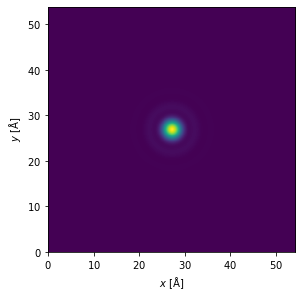
The main interface for simulating plasmons is the MonteCarloPlasmons class. We set the plasmon mean free path to \(\lambda_p = 1050 \ \mathrm{Å}\), the critical angle to \(\theta_c = 27.6 \ \mathrm{mrad}\) and the plasmon excitation energy is set to \(E_p = 27 \ \mathrm{eV}\). Thus the characteristic angle at \(200 \ \mathrm{keV}\) is
We want simulations of zero-loss, single, double and triple excitations, hence we will obtain the scattering signal equivalent to setting the energy-filter to energies of \(0 \ \mathrm{eV}\) (normal multislice), \(17 \ \mathrm{eV}\), \(34 \ \mathrm{eV}\) and \(51 \ \mathrm{eV}\). We perform the Monte-Carlo integration over \(50\) random samples for each excitation (i.e. not including the zero loss) and set a seed to make the simulation reproducible.
Note that for each of the plasmon samples we also have \(50\) phonon configurations, thus a total of \(3 \times 50 \times 50 = 7500\) runs of the multislice algorithm are required.
plasmons = MonteCarloPlasmons(
mean_free_path=1050,
excitation_energy=17,
critical_angle=27.6,
num_samples=50,
num_excitations=[0, 1, 2, 3],
seed=0,
)
We randomly draw the depths of the inelastic scattering events as well as the radial and azimuthal scattering angles using the .draw_events method.
events = plasmons.draw_events(probe, potential)
Denoting a uniform random number over the range \([0,1]\) as \(\mathrm{RND}\), the scattering lengths \(s\) are obtained from a Poisson distribution
We show cumulative distribution plots for the depths of the first, second and third plasmon scattering events. All scattering events must happen before the exit plane; hence, given a specified sample depth, the first scattering event of a triple-plasmon excitation generally occurs closer to the entrance, whereas the third scattering event of a triple-plasmon excitation generally must happen deep in the sample.
ax = events.show_cumulative_scattering_events(num_excitations=[1, 2, 3], bins=30)
figure = plt.gcf()
figure.set_size_inches(12, 4)
plt.tight_layout()
[<Axes: > <Axes: > <Axes: >]
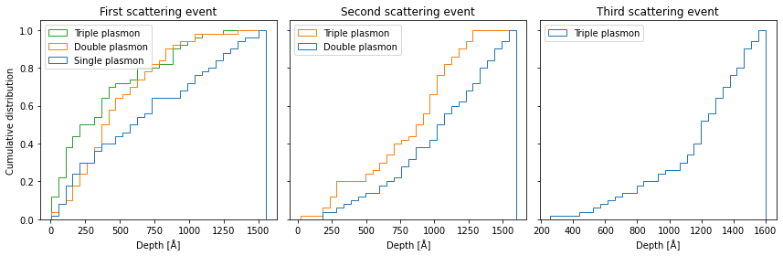
The radial scattering angles are distributed according to
and the azimuthal angles are uniformly distributed on the circle
We show the distribution of radial scattering angles below. The majority of scattering events occur at angles \(<2 \ \mathrm{mrad}\) due to the small characteristic angle, although events that approach the critical angle are also possible.
events.show_scattering_angle_distribution(bins=30)
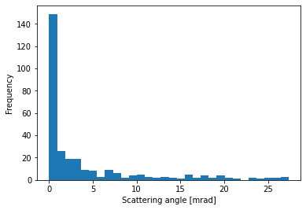
The likelyhood of different numbers of excitations, \(N\), depends on the mean free path and the depth, \(t\), of the sample. Thus each number of excitations is weighted according to
In this case, a single plasmon excitation is more likely than either zero-loss and two or more excitations.
events.show_weights()
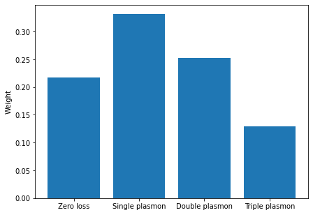
We can then set up a multislice simulations with plasmons included.
from abtem.inelastic.plasmons import reduce_plasmon_axes
# This interface will be improved in our final version
plasmon_probes = probe.copy().insert_transform(events)
measurements = plasmon_probes.multislice(potential, detectors=detectors)
measurements = reduce_plasmon_axes(measurements)
---------------------------------------------------------------------------
AttributeError Traceback (most recent call last)
Cell In[11], line 5
1 from abtem.inelastic.plasmons import reduce_plasmon_axes
3 # This interface will be improved in our final version
----> 5 plasmon_probes = probe.copy().insert_transform(events)
7 measurements = plasmon_probes.multislice(potential, detectors=detectors)
9 measurements = reduce_plasmon_axes(measurements)
AttributeError: 'Probe' object has no attribute 'insert_transform'
We call .to_zarr to run the simulation and write the result to disk. This may be expensive depending on your hardware, the calculation took about 45 min on an Nvidia 2080Ti GPU.
#measurements.to_zarr("energy_filtered_cbed.zarr")
The result is read back in.
measurements = abtem.from_zarr("energy_filtered_cbed.zarr").compute()
[########################################] | 100% Completed | 112.17 ms
We show the diffraction patterns for each number of excitation on individually normalized colorscales. We see that the contrast of features are reduced in the energy-filtered patterns, especially within the bright-field disk.
measurements.crop(20).show(
explode=True,
figsize=(16, 4),
cmap="gray", # cbar=True,
);
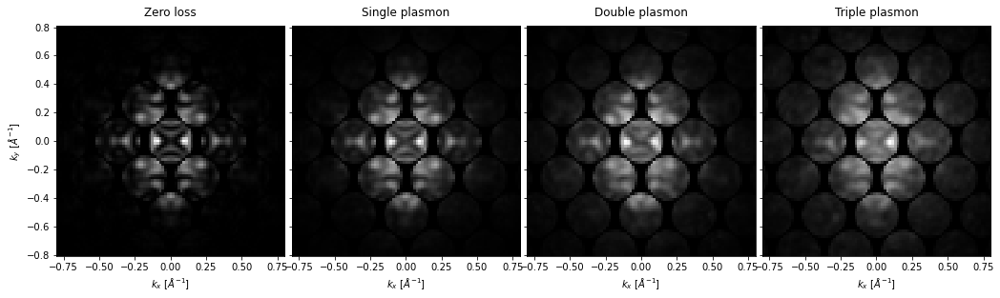
To make the comparison more quantitative we extract horizontal lineprofiles averaged over the 002 Kikuchi line. The area is shown as a red box shown in the next output cell.
lineprofile = measurements.interpolate_line_at_position(
center=(0.0, 2), extent=1.4, angle=0.0, width=0.5, endpoint=True
)
We show the diffraction patterns up to a larger maximum angle on a power scale.
visualization = measurements.crop(100).show(
explode=True, figsize=(16, 4), cmap="gray", power=0.2
)
visualization.add_area_indicator(
lineprofile, edgecolor="k", linewidth=2, facecolor="red", alpha=0.25, panel="first"
)
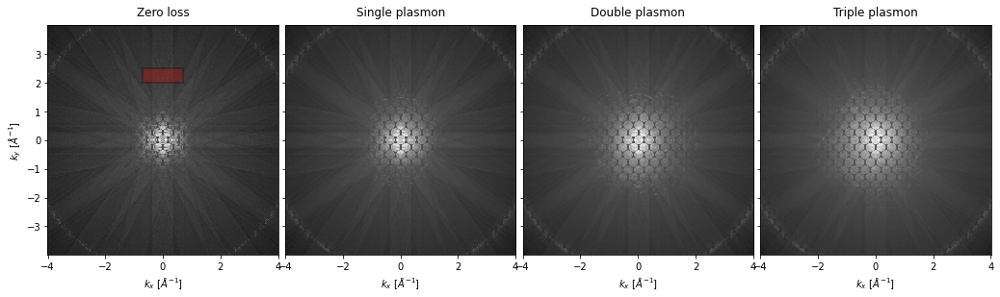
Finally, we show the line profiles, normalized for direct visual comparison. We see that the contrast of the Kikuchi line is reduced in the energy-filtered lineprofiles.
lineprofile.normalize_ensemble(scale="max", shift="none").show()
<abtem.visualize.MeasurementVisualization1D at 0x1ec14650bb0>
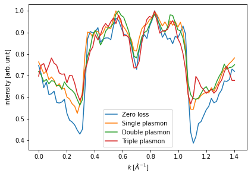
STEM with plasmon loss#
Next, we do a STEM simulation with a much thinner sample.
We create a sample of silicon in the \(\{110\}\) direction and repeat it in \(z\) up to the desired thickness of \(100 \ \mathrm{Å}\). We create a standard potential with frozen phonons with an rms displacement of the silicon atoms of \(0.078 \ \mathrm{Å}\).
atoms = ase.build.bulk("Si", cubic=True)
atoms = ase.build.surface(atoms, indices=(0, 1, 1), layers=3, periodic=True)
atoms = abtem.orthogonalize_cell(atoms)
repetitions = (5, 4, 9)
atoms *= repetitions
atoms.center()
frozen_phonons = abtem.FrozenPhonons(atoms, sigmas=0.078, num_configs=50)
potential = abtem.Potential(
frozen_phonons, slice_thickness=1.9, parametrization="lobato"
)
We create a line scan across one of the silicon dumbells, shown as a red line in the left panel below.
scan = abtem.LineScan(start=atoms[2160], end=atoms[2161], sampling=0.1)
scan.add_margin(1.4)
fig, (ax1, ax2) = plt.subplots(1, 2, figsize=(12, 4))
abtem.show_atoms(atoms, plane="xy", scale=0.5, ax=ax1)
abtem.show_atoms(atoms, plane="xz", scale=0.5, ax=ax2, linewidth=0.0)
scan.add_to_plot(ax1, color="r")
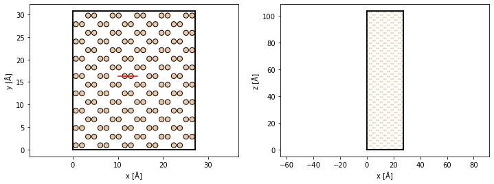
We create an aberrations-free probe with an energy of \(200 \ \mathrm{keV}\) and a convergence semiangle of \(20 \ \mathrm{mrad}\).
probe = abtem.Probe(
energy=200e3,
gpts=512,
semiangle_cutoff=20,
)
probe.grid.match(potential)
detectors = abtem.FlexibleAnnularDetector()
probe.show(cbar=True)
<abtem.visualize.MeasurementVisualization2D at 0x1ec12ccd2a0>
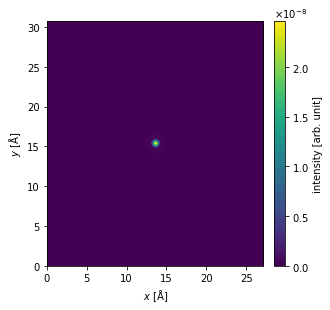
We create our MonteCarloPlasmons class identical to earlier, however, we only include single excitations as higher excitations is unprobable for samples of this lower thickness.
plasmons = MonteCarloPlasmons(
mean_free_path=1050,
excitation_energy=17,
critical_angle=27.6,
num_samples=50,
num_excitations=1,
seed=15,
)
events = plasmons.draw_events(probe, potential)
We show the depth of the scattering event the distribution of radial scattering angles, however, these plots only differ from the above due to using randomness.
fig, (ax1, ax2) = plt.subplots(1, 2, figsize=(8, 4))
events.show_cumulative_scattering_events(ax=ax1)
events.show_scattering_angle_distribution(ax=ax2)
plt.tight_layout()
[<AxesSubplot: >]
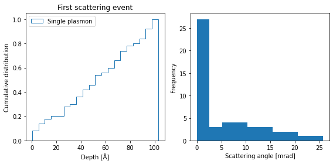
We run the multislice calculations for each probe positions with the plasmon loss.
from abtem.inelastic.plasmons import reduce_plasmon_axes
# This interface will be improved in our final version
plasmon_probes = probe.copy().insert_transform(events)
line_profiles = plasmon_probes.scan(potential, scan=scan, detectors=detectors)
line_profiles = reduce_plasmon_axes(line_profiles)
We run the simulations.
line_profiles.compute()
[########################################] | 100% Completed | 12m 50s
<abtem.measurements.PolarMeasurements object at 0x000001EC5C6A81C0>
We integrate the output between \(80\) and \(200 \ \mathrm{mrad}\). The result show that with plasmons
line_profiles.integrate_radial(inner=80, outer=130).show()
<abtem.visualize.MeasurementVisualization1D at 0x1ec5875e200>
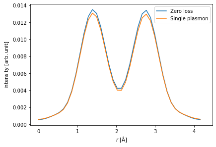